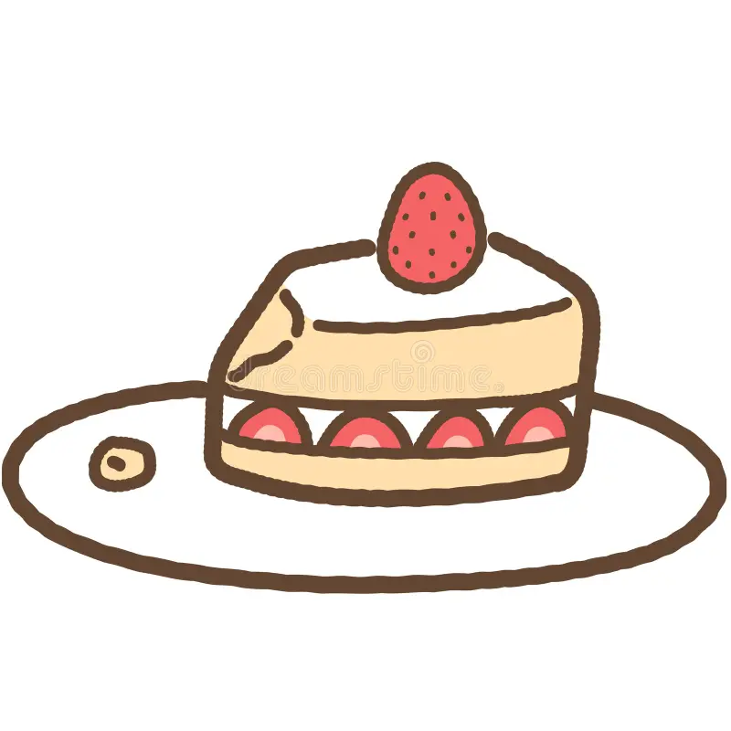

Strawberry Shortcake
Home

Description
Delicious strawberry shortcake!
Ingredients
- 2 cups all-purpose flour
- 1/4 cup granulated sugar
- 1 tablespoon baking powder
- 1/2 teaspoon salt
- 1/2 cup cold unsalted butter, cubed
- 2/3 cup whole milk
- 1 teaspoon vanilla extract
- 2 cups heavy cream
- 1/4 cup powdered sugar
- 1 teaspoon vanilla extract
- 4 cups fresh strawberries, sliced
- 2 tablespoons granulated sugar
Steps
- Preheat your oven to 425°F (220°C). In a large mixing bowl, combine the flour, sugar, baking powder, and salt.
- Cut in the cold butter using a pastry cutter or your fingers until the mixture resembles coarse crumbs.
- In a separate bowl, mix the milk and vanilla extract. Pour the wet ingredients into the dry ingredients and stir until just combined. Do not overmix.
- Turn the dough out onto a lightly floured surface and knead gently a few times. Pat the dough into a 1-inch thick rectangle and cut out rounds using a biscuit cutter.
- Place the rounds on a baking sheet lined with parchment paper. Bake for 12-15 minutes, or until golden brown. Remove from the oven and let cool on a wire rack.
- While the shortcakes are baking, prepare the strawberries. In a bowl, combine the sliced strawberries and 2 tablespoons of sugar. Let them macerate for at least 30 minutes.
- In a separate bowl, whip the heavy cream, powdered sugar, and vanilla extract until stiff peaks form.
- To assemble the strawberry shortcakes, slice the cooled shortcakes in half horizontally. Spoon some of the macerated strawberries onto the bottom half, followed by a generous dollop of whipped cream. Place the top half of the shortcake on top and add more strawberries and whipped cream if desired.
- Serve immediately and enjoy your homemade strawberry shortcake!